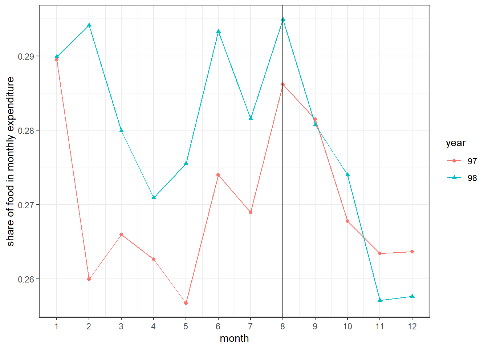

Chapter 8 Some applications of household-level data
In this section, I present some application of the household level data.
8.1 Finding the trend of a specific expenditure item
To find the trend of a specific expenditure item we can use expenditure files as follows
library(tidyverse)## -- Attaching packages --------------------------------------- tidyverse 1.3.1 --## v ggplot2 3.3.5 v purrr 0.3.4
## v tibble 3.1.4 v dplyr 1.0.7
## v tidyr 1.1.3 v stringr 1.4.0
## v readr 2.0.1 v forcats 0.5.1## -- Conflicts ------------------------------------------ tidyverse_conflicts() --
## x dplyr::filter() masks stats::filter()
## x dplyr::lag() masks stats::lag()## merging different rounds
list_EXP <- list.files(path = "exported", pattern = "^EXP.*\\Rds$")
EXP <- NULL
for (year in list_EXP) {
EXP <- assign(year, readRDS(paste0("exported/",year))) %>%
mutate(year = parse_number(year)) %>%
bind_rows(EXP)
rm(list=year)
}
exp <- EXP %>%
filter(Global == 1011111) # here we choose the item based on the global code
ggplot(exp, aes(x=year, y=log(Value_r),color=urban,shape=urban)) +
geom_line() +
geom_point() +
labs(title = paste("trend of ",exp$item[1]))
8.2 Finding the trend of percent of households with a nonzero expenditure for a specific items
library(tidyverse)
rm(list = ls())
list_HEIS <- list.files(path = "exported", pattern = "^HEIS.*\\Rdata$")
EXPS <- NULL
for (year in list_HEIS) {
load(paste0("exported/",year))
yr = parse_number(year)
EXPS <- bind_rows(mget(ls(pattern = "^.*P3S.*"))) %>% # enter the table of the item
filter(Global %in% c(2127125,2127131)) %>% # item codes are entered here
select(Address,Global, value) %>%
arrange(Global,Address) %>%
pivot_wider(names_from = Global, names_prefix="exp_", values_from = value, values_fn = sum) %>%
mutate(year = yr) %>%
bind_rows(EXPS)
rm(list = ls(pattern = yr)) # removing unnecessary objects
}
list_HH <- list.files(path = "exported", pattern = "^HH.*\\Rds$")
HH <- NULL
for (year in list_HH) {
HH <- assign(year, readRDS(paste0("exported/",year))) %>%
filter(!is.na(weight)) %>%
mutate(year = parse_number(year)) %>%
bind_rows(HH)
rm(list=year)
}
HH %>%
left_join(EXPS) %>%
group_by(year) %>%
summarize(across(starts_with("exp_"),~weighted.mean(!is.na(.x),weight)*100)) %>%
pivot_longer(starts_with("exp_"), names_to = "item", values_to = "nonzero_percent") %>%
ggplot(aes(x=year,y=nonzero_percent, shape=item, color=item)) +
geom_point() + geom_line()## Joining, by = c("Address", "year")8.3 Gas price reform in November 2019 in Iran and poverty
The Iranian government announced an increase in gas price from 1000T to 3000T per liter in November 2019 (Aban 1398) and paid the revenue from this reform to the bottom 60% of household in the income disribution. To see whether this policy help improving the living condition of lower income households or not we compare the monthly trend of share of food expenditure in 1397 and 1398. As food is neccesary for housholds its share in total expenditure is a simple measure of poverty. The below code and its output shows that prior to Aban the food share in 1398 was higher than 1397, suggesting worse living condition in 1398. But after Aban the share declined and in 1398 were lower than 1397, which is most probably due to the gas price reform and its subsequent subsidies.
library(tidyverse)
monthly <- readRDS("./exported/HH97.Rds") %>%
mutate(year="97") %>%
bind_rows(readRDS("./exported/HH98.Rds")) %>%
mutate(year=replace_na(year,"98")) %>%
group_by(month,year) %>%
summarise(across(c(cost_food,expenditure),~sum(.x*weight,na.rm=T))) %>%
mutate(foodshare=cost_food/expenditure) %>%
filter(month>0)
ggplot(monthly,aes(month, foodshare, color = year, shape = year)) +
geom_line() + geom_point() +
geom_vline(xintercept=8)+
ylab("share of food in monthly expenditure") +
theme_bw() + scale_x_continuous(breaks=1:12)